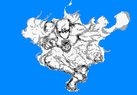

深紫/Deep Purple
C+1800
能力等级：
破坏力C 速度C 射程C 持续力A 精密动作性A 成长性B
能力定位 近距离操控型
能力评定：能操作空气中气体密度的能力。可以制造出有毒气体，变化气压，将空气中的氢和氧混合爆炸等能力。但是因为射程是短到离自己太近的程度，所以太过危险的操作是不会做的。
放出和收回替身是一个迅捷动作，你只有在放出替身的情况下才能使用深紫的技能。控制替身行动会消耗等同于你的动作，即移动动作控制替身移动，标准动作控制替身攻击。替身的初始射程为10米。替身使用替身使者的相应数据进行检定和防御。
替身被视为灵体，只有拥有灵视的人才能看见替身。当替身受到伤害的同时，替身使者也会受到等于伤害数的冲击伤害。但是当替身使者受到伤害时，替身不会受到伤害。这意味着替身使者和替身在同一个范围伤害攻击下，替身使者可能受到二次伤害。
替身使者具备灵视能力以及正常攻击灵体虚体的能力。
深紫初始自带【毒瓦斯】和【真空】俩个技能。
【毒瓦斯】：标准动作使用，对10米射程内1点制造2.5米半径的毒气，范围内所有人（如果自己也在，则包括自己）过一个DC为13的强韧豁免，并承受失败数点中毒点数。
中毒点数类似于燃烧点数但造成毒素伤害，以强韧豁免。中毒点数具有等于神奇宝贝属性上限等级的毒素来源，能够被相应等级的免疫毒素效果免疫，也能被D级或以上解除毒素来源的能力或效果直接解除。目标可以使用一个标准动作抵抗体内的毒素，这被视为强韧判定，每个成功数将解除1点中毒状态。中毒状态点数可以取高但不会叠加。
【真空】：标准动作使用，对10米射程内一个目标使用，以智力+学识+化学对抗目标的强韧豁免，造成胜出数点严重力场伤害，这是C级创伤来源的窒息效果，只对具备呼吸系统的生物生效。
能力开发：
【冷气/热气】 ：D+500
制造出超出正常温度范围的冷气/热气，对目标造成伤害。标准动作对以自身为中心10米半径的所有人分别进行一次攻击（智力+学识：化学），视当时心情造成灼热/冻寒伤害。
【催泪瓦斯】：C+1000
标准动作使用，对10米射程内1点造成5米半径的刺激性气体，范围内所有人（同上）过一个DC为（智力+学识：化学检定成功数）的强韧豁免，并承受失败数点目眩点数，正常豁免。
范围内所有人在对这轮内对【催泪瓦斯】的技能判定上，生存技能承受4DP环境减值。
【空气弹】：C+1000
制造出空气弹攻击敌人，击中目标后还会将目标向后推移一定的距离
标准动作使用，对10米内一个目标进行一次智力+学识：化学攻击检定，造成力场严重伤害，附带【高速6】特性。被击中的目标还会向后倒退20米并倒地，中途撞到障碍物会提前停止后退但是会处于倒地状态。
【催眠瓦斯】：B+2000
制造出可以让敌人进行浅层睡眠的气体。
标准动作使用，在面前10*10*10米内的范围内制造出可使人进入浅层睡眠状态的气体，持续一轮。范围内的所有人需要进行一次强韧豁免对抗你的智力+学识：化学+8DP的攻击检定，若是失败，则立刻进行普通的可被唤醒的睡眠状态。
这是B级药物来源的睡眠效果。
你本人无需进行检定，但若是你在这轮结束前进入催眠瓦斯5米范围内，也需要正常进行豁免。
【爆炸】：B+2000
将空气的中氢和氧混合爆炸的能力。
标准动作对10米内的一个目标使用，进行一次智力+学识：化学的攻击检定，目标反射豁免，造成胜出数点火焰伤害，附带等于胜出数的燃烧点数，正常豁免。被击中的目标还会向后倒退20米并倒地，中途撞到障碍物会提前停止后退但是会处于倒地状态。
当你的学识达到10级后，解锁新的运用方式【大爆炸】
【大爆炸】：攻击目标扩大到面前10*10*10的所有人，你本人无需进行检定，但若是你在攻击过程中进入【大爆炸】5米范围内时，也需要正常进行豁免。
【蜃气楼】：A+4000
制造出使人陷入幻觉的气体。
标准动作使用，在以自己为中心，10米半径范围内制造出使人陷入幻觉的气体，范围内的所有敌人需要以强韧豁免对抗你的智力+学识：化学检定，若是失败，则在失败数轮内他们会陷入混乱状态：
你可以将场上的人划分为【友方】【中立】【敌人】。
对于陷入混乱状态的目标来说，他们眼中的友方目标是你指定的【友方】，他们眼中的中立目标是你指定的【中立】，他们眼中的敌对目标是你眼中的【敌人】。
对于陷入混乱状态的目标来说，他们受到来自别人的增益性效果，是【友方】提供的；他们受到的伤害和异常，减益性效果，是【敌人】提供的。而【中立】单位对他们什么都没做。（哪怕事实上并不是这样）
对于陷入混乱状态的目标来说，他们进行攻击或者造成负面效果时，只能将【敌人】做为目标，而他们进行增益性效果时，只能选择【友方】做为目标。除非使用的是不分敌我的能力或者是目标为他们自己的能力。
在发动【蜃气楼】前，你可以自由动作进行一次【智力+学识：化学】的检定，范围内的所有敌人在对【蜃气楼】的效果进行豁免时，会在强韧豁免上承受等于这次检定成功数点DP环境减值。
这是A级药物来源的混乱效果。
【真空地带】：A+4000
在面前制造出一片真空地带，可以不由分说地夺去仍需呼吸的敌人的性命。
标准动作使用，进行一次智力+学识：化学攻击检定，面前10*10*10米内的所有人以强韧豁免，造成胜出数点力场严重伤害。
同时他们还能承受等于胜出数的疲乏异常点数和晕眩异常点数，分别正常豁免。
只要有一个胜出数，还具备呼吸系统的目标就会被夺去性命，这是A级创伤来源的即死效果。
你本人无需进行检定，但若是你在攻击过程中进入【真空地带】5米范围内时，也需要正常进行豁免。
【污染】：S+8000
制造出含多种毒素的污染气体，会给目标造成各种负面效果包括但不限于异常状态。
标准动作使用，进行一次智力+学识：化学攻击检定，对面前10*10*10米内的所有人造成以下负面效果（每项都是单独豁免）
【腐烂】：造成检定成功数点恶性腐蚀伤害，强韧豁免。
【毒药】：造成等同于【腐烂】带来的伤害值点毒素异常点数，强韧豁免。
中毒点数类似于燃烧点数但造成毒素伤害，以强韧豁免。中毒点数具有S级毒素来源，能被S级或以上解除毒素来源的能力或效果（非免疫毒素效果）直接解除。目标可以使用一个标准动作抵抗体内的毒素，进行一次强韧豁免，每个成功数将解除1点中毒点数。
【麻痹】：造成等同于【腐烂】带来的伤害值点麻痹异常点数，强韧豁免。
【混乱】：不由分说地对在自己攻击范围内的友方单位进行攻击，强韧豁免，DC为你的【腐烂】造成的伤害值。持续失败数轮。这是S级毒素来源造成的效果。
【火焰】：造成检定成功数点恶性火焰伤害，反射豁免。
【黑暗】：被剥夺视觉，陷入目盲状态，以强韧豁免，DC为你的【腐烂】造成的伤害值。持续失败数轮，这是S级毒素来源造成的效果。
【寂静】：被剥夺听觉，陷入耳聋状态，以强韧豁免，DC为你的【腐烂】造成的伤害值。持续失败数轮，这是S级毒素来源造成的效果。
你本人无需进行检定，但若是你在攻击过程中进入【污染】5米范围内时，也需要正常进行豁免。